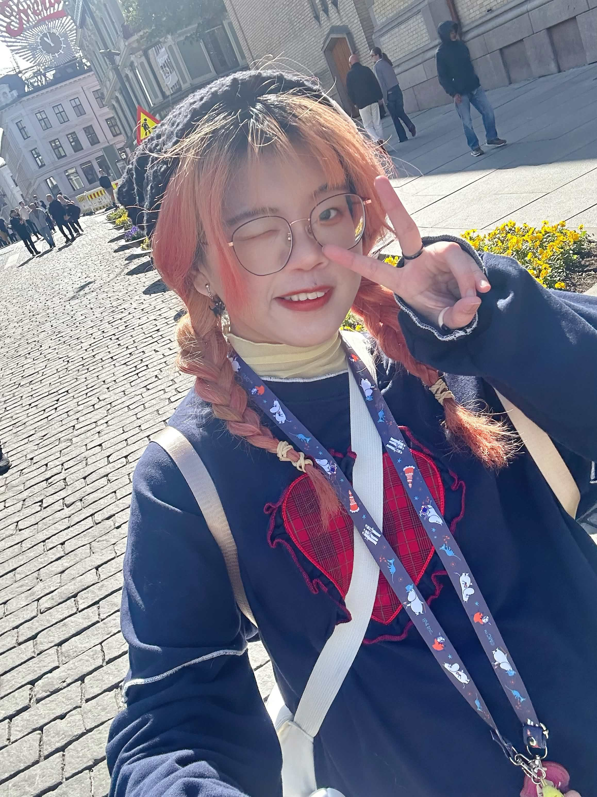

YU / PORTFOLIO
Menu
Home
Works
All Works
Ocean of Masks
Children's Kites
Temporary Stay
Co-creation Project
Doujin Booth Game
Invisible Mask
Cryptography Game
Toilet Launch
Struggle
Milkshake Hero
Traces Left Behind
3D & Motion Practice
Blood Is Not a Sin
Animation Study
Trace of Being
Erchong Floodway
Lahu Projection
One Finger
Visual Design Studies
Visual Identity
Illustration
About
EN
About
Yuki
Background
從財稅背景轉向資訊傳播領域，逐步發展出結構與視覺並行的創作方式。 目前以視覺設計、插畫與互動專案為主要方向， 並持續探索不同媒材之間的轉換與延伸。
Photoshop
Illustrator
InDesign
Clip Studio Paint
After Effects
HTML / CSS / JS
